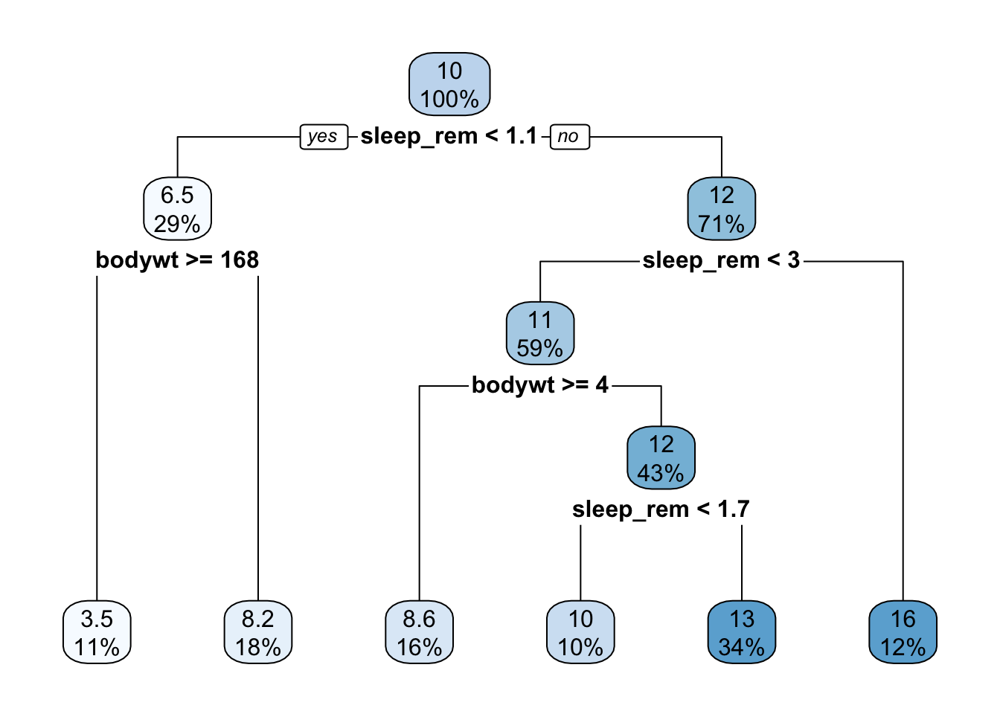
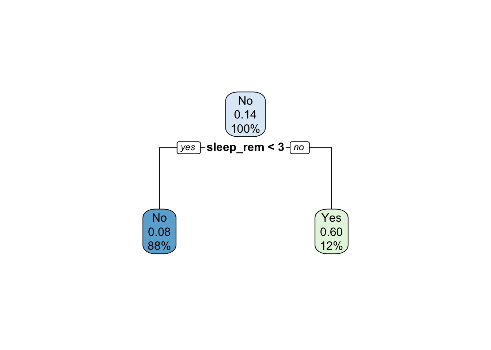
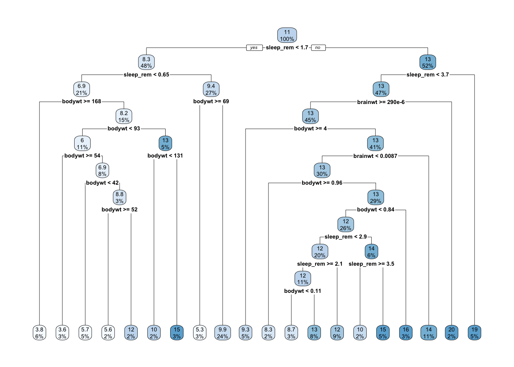
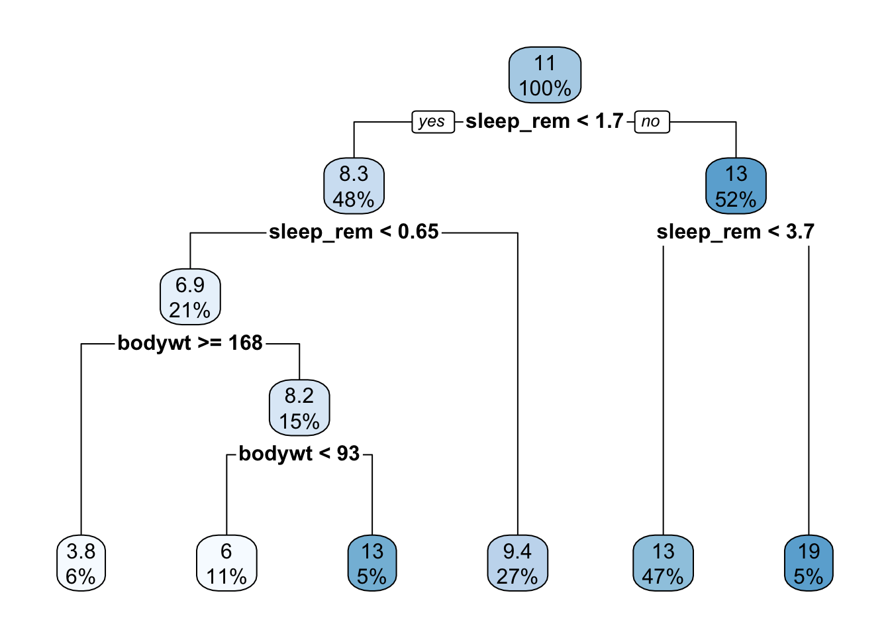

Machine learning is a broad and ever evolving topic, but any good data scientist needs to have a strong grasp of the major techniques and when to apply them. This post will explain and the pros and cons of several powerful machine learning models, as well as illustrate their use in R.
In general their are two major categories of machine learning: supervised and unsupervised. In supervised learning, data is formulated as predictor variables and then in turn used to predict a response variable. In unsupervised learning there is no response variable in mind, the goal is to work with the data to reveal some yet unknown connection or structure lying within.
Think of an explorer with a map of a forest. The explorer is the data scientist and the map is the data. In a supervised approach the explorer has an end destination in mind and they use the map to get there by discerning their route from the map. In an unsupervised approach the explorer still has the map, but they do not have an end destination in mind. Instead they use the map for a point of reference and see what they find by wandering the woods.
Supervised learning starts with an end goal in mind, and as such is the more common method with more developed techniques. As such we will start there.
Decision trees are one of the more basic machine learning algorithms and are fairly straightforward. The most basic case is placing a binary split on a data set, resulting in two nodes.
In a regression decision tree the mean value is taken of the data in each node, as opposed to a classification tree where the goal is to predict the category an observation will fall under. To further expand this model additional splits are made along each branch of the tree until a an observation threshold is reached at each node, which are then referred to as terminal nodes.
We will use the mammal sleep dataset msleep from the ggplot2 package to illustrate both regression and classification methods. For regression we aim to predict number of hours a mammal will sleep, and for classification we will predict whether or not a mammal sleeps over 15 hours.
library(rpart)
library(rpart.plot)## Warning: package 'rpart.plot' was built under R version 3.6.2library(ggplot2)## Warning: package 'ggplot2' was built under R version 3.6.2library(tidyverse)## ── Attaching packages ─────────────────── tidyverse 1.3.0 ──## ✓ tibble 3.0.3 ✓ dplyr 1.0.2
## ✓ tidyr 1.1.1 ✓ stringr 1.4.0
## ✓ readr 1.3.1 ✓ forcats 0.5.0
## ✓ purrr 0.3.4## Warning: package 'tibble' was built under R version 3.6.2## Warning: package 'tidyr' was built under R version 3.6.2## Warning: package 'purrr' was built under R version 3.6.2## ── Conflicts ────────────────────── tidyverse_conflicts() ──
## x dplyr::filter() masks stats::filter()
## x dplyr::lag() masks stats::lag()# regression
# setting minimum node size
control <- rpart.control(minsplit = 10)
tree_reg <- rpart(sleep_total ~ sleep_rem + sleep_cycle + brainwt + bodywt, data = msleep, control = control)
# summarizing the output
summary(tree_reg)## Call:
## rpart(formula = sleep_total ~ sleep_rem + sleep_cycle + brainwt +
## bodywt, data = msleep, control = control)
## n= 83
##
## CP nsplit rel error xerror xstd
## 1 0.32785736 0 1.0000000 1.0171560 0.12803619
## 2 0.12040994 1 0.6721426 0.7934170 0.09772762
## 3 0.09125178 2 0.5517327 0.7583796 0.09481300
## 4 0.07840203 3 0.4604809 0.7090937 0.09215805
## 5 0.05741804 4 0.3820789 0.6254148 0.08082949
## 6 0.03155866 5 0.3246609 0.5998584 0.08934658
## 7 0.03153208 6 0.2931022 0.5781393 0.08684610
## 8 0.01000000 7 0.2615701 0.5837590 0.08695357
##
## Variable importance
## sleep_rem bodywt brainwt
## 59 41 1
##
## Node number 1: 83 observations, complexity param=0.3278574
## mean=10.43373, MSE=19.56705
## left son=2 (24 obs) right son=3 (59 obs)
## Primary splits:
## sleep_rem < 1.05 to the left, improve=0.34235450, (22 missing)
## bodywt < 167.947 to the right, improve=0.29978550, (0 missing)
## brainwt < 0.0896 to the right, improve=0.22254410, (27 missing)
## sleep_cycle < 0.4 to the right, improve=0.08036684, (51 missing)
## Surrogate splits:
## bodywt < 85.5 to the right, agree=0.803, adj=0.333, (22 split)
##
## Node number 2: 24 observations, complexity param=0.07840203
## mean=6.4625, MSE=12.65318
## left son=4 (9 obs) right son=5 (15 obs)
## Primary splits:
## bodywt < 167.947 to the right, improve=0.4192953, (0 missing)
## sleep_rem < 0.65 to the left, improve=0.2146862, (6 missing)
## brainwt < 0.2995 to the right, improve=0.1246602, (9 missing)
##
## Node number 3: 59 observations, complexity param=0.1204099
## mean=12.04915, MSE=13.3547
## left son=6 (55 obs) right son=7 (4 obs)
## Primary splits:
## sleep_rem < 3.7 to the left, improve=0.23344920, (16 missing)
## bodywt < 4.04 to the right, improve=0.17790200, (0 missing)
## brainwt < 0.0896 to the right, improve=0.14424210, (18 missing)
## sleep_cycle < 0.1416667 to the right, improve=0.05088724, (33 missing)
##
## Node number 4: 9 observations
## mean=3.488889, MSE=0.874321
##
## Node number 5: 15 observations, complexity param=0.05741804
## mean=8.246667, MSE=11.23182
## left son=10 (12 obs) right son=11 (3 obs)
## Primary splits:
## bodywt < 93 to the left, improve=0.55349090, (0 missing)
## sleep_rem < 0.65 to the left, improve=0.30421500, (3 missing)
## brainwt < 0.012285 to the right, improve=0.02438838, (6 missing)
##
## Node number 6: 55 observations, complexity param=0.09125178
## mean=11.55818, MSE=10.72861
## left son=12 (13 obs) right son=13 (42 obs)
## Primary splits:
## bodywt < 4.04 to the right, improve=0.25115310, (0 missing)
## brainwt < 0.0165 to the right, improve=0.18979640, (17 missing)
## sleep_rem < 1.65 to the left, improve=0.11294570, (16 missing)
## sleep_cycle < 0.225 to the right, improve=0.05309202, (31 missing)
##
## Node number 7: 4 observations
## mean=18.8, MSE=0.575
##
## Node number 10: 12 observations, complexity param=0.03155866
## mean=7, MSE=5.045
## left son=20 (6 obs) right son=21 (6 obs)
## Primary splits:
## sleep_rem < 0.65 to the left, improve=0.8466028, (0 missing)
## bodywt < 29.3675 to the right, improve=0.5180046, (0 missing)
## brainwt < 0.012285 to the right, improve=0.1489938, (4 missing)
## Surrogate splits:
## bodywt < 2.5625 to the right, agree=0.833, adj=0.667, (0 split)
## brainwt < 0.012185 to the right, agree=0.583, adj=0.167, (0 split)
##
## Node number 11: 3 observations
## mean=13.23333, MSE=4.895556
##
## Node number 12: 13 observations
## mean=8.607692, MSE=5.494556
##
## Node number 13: 42 observations, complexity param=0.03153208
## mean=12.47143, MSE=8.820136
## left son=26 (6 obs) right son=27 (36 obs)
## Primary splits:
## sleep_rem < 1.45 to the left, improve=0.14361100, (12 missing)
## brainwt < 0.0165 to the right, improve=0.05165737, (14 missing)
## bodywt < 3.34 to the left, improve=0.04594485, (0 missing)
## sleep_cycle < 0.175 to the left, improve=0.03977921, (25 missing)
##
## Node number 20: 6 observations
## mean=4.933333, MSE=0.9488889
##
## Node number 21: 6 observations
## mean=9.066667, MSE=0.5988889
##
## Node number 26: 6 observations
## mean=9.766667, MSE=3.718889
##
## Node number 27: 36 observations
## mean=12.92222, MSE=8.24784# displaying the tree
rpart.plot(tree_reg)
# classification
# creating dummy variable of animals that sleep 15+ hours/day
heavy_sleepers <- ifelse(msleep$sleep_total >= 15, "Yes", "No")
sleep_data <- msleep %>%
cbind(heavy_sleepers)
# running model
tree_class <- rpart(heavy_sleepers ~ sleep_rem + sleep_cycle + brainwt + bodywt, data = sleep_data, control = control)
rpart.plot(tree_class)
The rpart function operates by first splitting the data by the most significant predictor and its corresponding binary categories. In this case that is sleep_rem values which are less than 1.1, or greater than or equal to 1.1. Similar results can be seen in the classification model.
The algorithm then continues to look for the most significant binary split of each new subset of data, until there are 5 observations or less at each terminal node.
The summary function gives detailed information on each node and in summation, such as mean at each split, mean squared error (MSE), number of observations at each node, etc.
The rpart.plot function provides an easy to interpret breakdown of the tree created. In the default settings, the regression tree displays the predicted value and percentage of observations at each node, while the classification tree displays the predicted category, percentage of observations, and the ratio of correct predictions.
As always we should test the model to determine how well it performed.
# creating training and testing subsets
set.seed(1)
train <- msleep[sample(1:nrow(msleep), floor(0.8 * nrow(msleep))),]
test <- msleep %>% filter(!name %in% train$name)
# predicting and measuring accuracy
control <- rpart.control(minsplit = 2) # setting new minimum node size
tree_train <- rpart(sleep_total ~ sleep_rem + sleep_cycle + brainwt + bodywt, data = train, control = control)
tree_prediction <- predict(tree_train, test)
mse <- mean((tree_prediction - test$sleep_total)^2)
mse## [1] 10.48191sqrt(mse)## [1] 3.237578rpart.plot(tree_train) We can see that our model holds an MSE of 10.48, the square root of that being 3.24 saying that our model leads to predictions that are within roughly 3.24 hours of a mammals actual sleep time.
We are also able to prune a tree (remove some nodes) using the prune function to improve the performance of the model.
# setting the cp paramter and pruning the model
pruned_tree <- prune(tree_train, cp = 0.05)
tree_prediction <- predict(pruned_tree, test)
mse <- mean((tree_prediction - test$sleep_total)^2)
mse## [1] 8.54812sqrt(mse)## [1] 2.923717rpart.plot(pruned_tree)
By pruning the tree, and tuning the cp parameter which will be discussed further into the post, we were able to improve performance of the model to predict mammal sleep times within approximaltely 2.92 hours.
Pros
* Trees are easily interpretable
* Trees are easy to display graphically
* Trees can process qualitative variables without needing to create dummy variables
Cons * Prediction accuracy is much lower compared to most traditional regression and classification techniques.
The good news is that decision trees have been further fleshed out to be more accurate and useful in the form of bagging, random forest, and boosting.